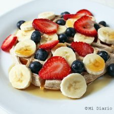

waffles integrales con chía
Ingredientes
- 1 1/2 taza de leche vegetal, puede ser de coco, almendra o la que sea de su gusto.
- 1 cucharada de chía
- 2 huevos
- 2 tazas de harina integral
- 1 cucharadita de polvos de hornear
- 1 cucharadita de azúcar de coco u otro endulzante de su gusto
- 1 cucharada de esencia de vainilla
- Maple syrup, miel u otra salsa para acompañar
- Diferentes tipos de frutas
Preparacion
- Mezclar todos los ingredientes en la licuadora.
- Luego ir colocando la mezcla en la wafflera según las intrucciones de su máquina.
- Idealmente servir tibios acompañados de alguna salsa o syrup
- Agregar encima berries, banana u otra fruta que sea de su gusto.